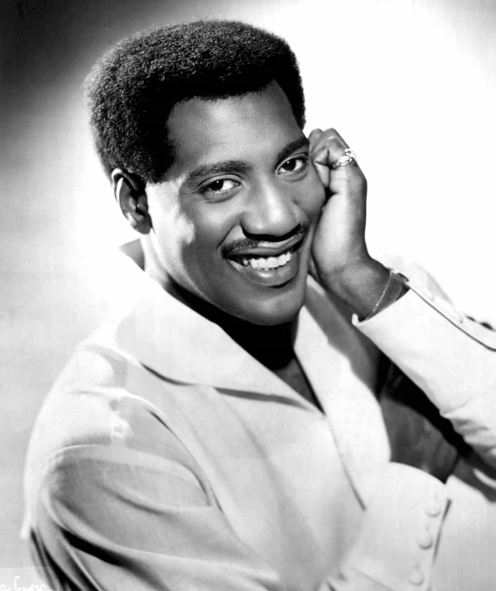
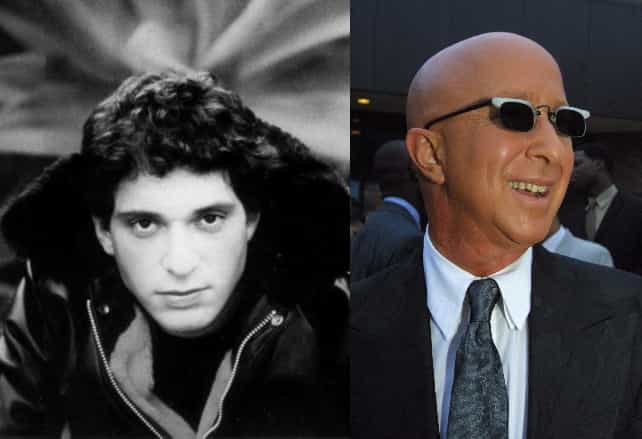
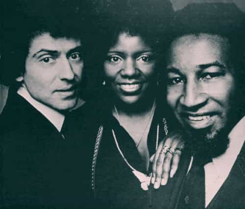

< < < Back
The 4 Most Feminist Songs Of All Time Were Written By Men – Return Of Kings
Feminists may claim to be strong and independent, but the “girl power” songs they have used for years are mostly or exclusively written by male musicians and songwriters. In most cases, the women just contributed their voices and the ideas and concepts were the domain of men.
Many Return Of Kings readers are familiar with the reality that Victor Svyatski built the supposedly all-female feminist extremist group Femen. We also know that mentally ill (or supreme shitlord) Bruce Jenner won Woman of the Year. The preponderance of men writing feminist songs is simply another addition to the very thick book of “Men just do it better.”
I have based the selection of these four super-feminist songs on two criteria: a) the airtime I remember they were given, particularly when I was a child, and b) their use by feminists and SJWs in spreading their message. At best (or worst, depending on your perspective), these songs were co-written by a man and woman.
Respect – Otis Redding

Respect is almost universally associated with Aretha Franklin, but her version only added the chorus, most notably “R.E.S.P.E.C.T.,” and elements like “Sock it to me” (sung by the backup singers, her sisters). Yet Otis Redding really deserves the credit for what Rolling Stone called the fifth greatest song of all time. The Library of Congress even went so far as to put Franklin’s version in the prestigious National Recording Registry.
The feel of the two versions may differ, yet Franklin merely piggybacked off of Redding’s work, “achieving” 1,000 times the acclaim. This is more than ironic given that the song presents her as a strong, confident woman who not only demands respect from men but doesn’t need them. Well, Aretha Franklin clearly needed Otis Redding for the song that made her career.
It’s Raining Men – Paul Jabara and Paul Shaffer

In retrospect, this song seems like a prelude to slut culture. And it was actually written by Paul Jabara and Paul Shaffer, despite being sung by The Weather Girls (who seem like a prelude to the modern worshipping of obesity). Jabara was gay, so this is not entirely a case of men writing songs that have nothing to do with them. Many will remember Shaffer as David Letterman’s longstanding comedic and musical sidekick on both Late Night with David Letterman and Late Show with David Letterman.
With lyrics like “I’m gonna go out to run and let myself get… Absolutely soaking wet,” It’s Raining Men acted as an exhortation for second wave feminists, not to mention women in general, to go out and spread their legs for cock after cock. Former Spice Girl Geri Halliwell’s cover of the song in the 2000s only obscured Jabara and Shaffer’s authorship further.
I Am Woman – Ray Burton and (sort of) Helen Reddy
She gave me lyrics scribbled down on a piece of paper and I went home that Sunday night and wrote the whole song in about three hours. Her lyrics were more in prose or poetic form, so I rewrote a few bits of it.
— Ray Burton recounting how he wrote at least the entire music for I Am Woman, if not a chunk of the lyrics
All Helen Reddy seems to have contributed to I Am Woman are the words. The man who wrote the music, Ray Burton, claims he actually penned a decent part of the lyrics, too. Of course, Reddy would have none of this, saying she wrote all the lyrics. Still, I hope you can see the humor of the matter. With lines like “If I have to, I can do anything… I am strong (strong)… I am invincible (invincible)… I am woman,” why couldn’t Reddy just write the music herself?
The story behind I Am Woman is perhaps the funniest of all of these songs. It had a particular resonance with the “women’s liberation movement,” whereas songs like Franklin’s version of Respect and It’s Raining Men exerted a more common appeal. That the more rabid feminists of the 1970s and 1980s gravitated to this male-written song more than basically any other is a testament to their cluelessness.
I Will Survive – Freddie Perren and Dino Fekaris

Gloria Gaynor made something of a career out of taking Dino Fekaris’ work and singing it. For I Will Survive, Fekaris and co-writer Freddie Perren gave an excuse for every maladjusted, dumped woman to fume for months and then pretend that this experience made their character better. “But then I spent so many nights thinking how you did me wrong… And I grew strong” is the perfect encapsulation of what many women both try to do and delude themselves over doing.
But it gets worse. “I’ve got all my life to live… And I’ve got all my love to give” from I Will Survive is essentially the paraphrasing of the online dating profiles of every girl who says something like “Men, not boys!”, “If you can’t handle me at my worst, you don’t deserve me at my best,” or other solipsisms. Of the four songs I have explored in this article, this one is the worst. It gives a voice to childish and hamstering female behaviors like no other piece of music has or probably ever will.
The men behind these songs are just more talented white knights
I have avoided direct criticism of the men behind these über-feminist songs until the very end. Just as we can point to the vital role of men in every feminist campaign from suffrage demands to tampon-less marches, the songs that make up feminist “musical culture” usually owe their existence to men. Some, like Otis Redding, who died around the time Aretha Franklin used his song, may be harder to excoriate, but others, like Ray Burton, were not only complicit but also overzealous in their support of feminism.
So next time some braindead girls in your vicinity want to play a feminist tune or simply find “girl power” enjoyment in one of them, maybe you should ask, “Hey, wasn’t this song written by a man?”
Read More: Why You Should Be Thankful For “Girl Power” Songs